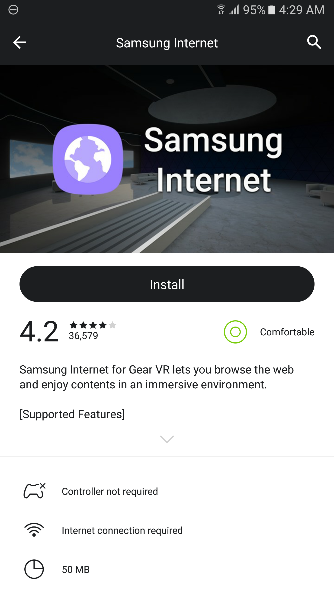

- Download
- Download
- System requirements
- Version
- 4.2.00-14
- File size
- 298.85 MB
- Release notes
-
- WebVR is a experimental feature and is enabled by visiting a WebVR compatible site where user will be prompted to enable the feature.
Instructions
-
Search for and install Samsung Internet Browser from the Oculus Gear VR store.
 Oculus Carmel install screen - Launch Samsung Internet Browser from your Gear VR Library.
- Navigate to a WebVR-compatible site.
- Accept the option to enable WebVR.
- Enjoy!
Latest version
Known issues
These known issues apply to the latest published version available from the Oculus Gear VR app store.
-
Latency is quite high and resolution is low. Content is very pixelated.
Demos
-
{{ demo_item('three_examples') }}
{{ demo_item('aframe_examples') }}